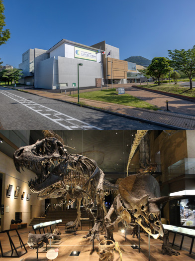
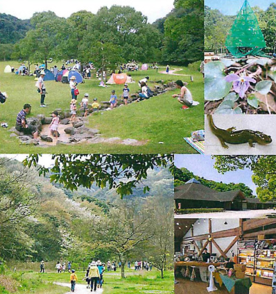
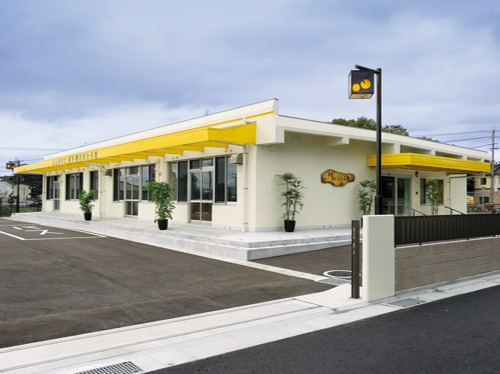
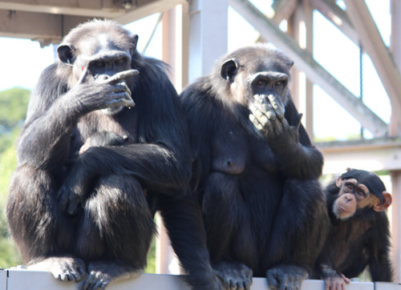
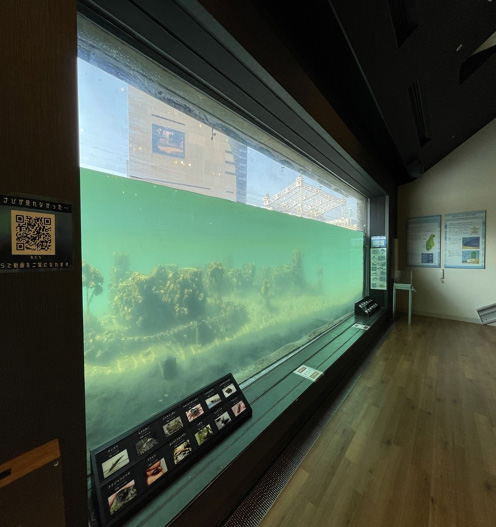
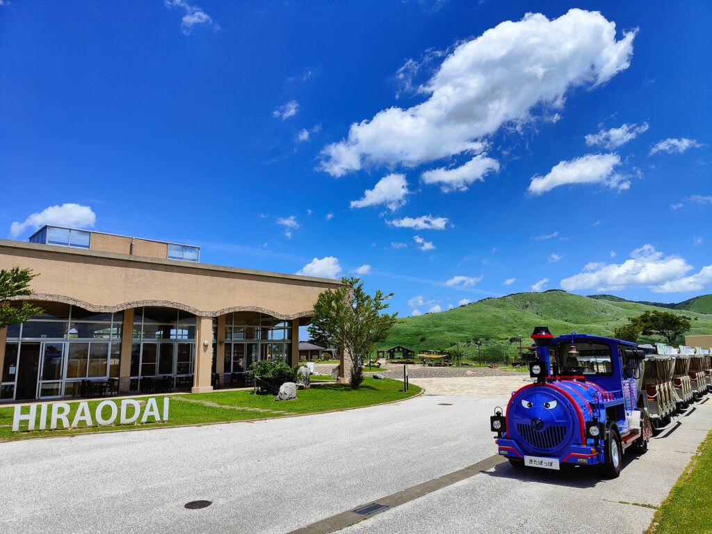

活動拠点
北九州市が認定した10の自然体験・環境学習拠点
北九州ネイチャーポジティブセンターとは
北九州市生物多様性戦略 2025-2030 を推進する活動拠点として、市内10カ所の生物多様性関連公共施設を束ねた「北九州ネイチャーポジティブセンター（NPセンター）」を設置しました。
各施設はそれぞれ独自の特色を持ち、環境ミュージアムでの学習体験、響灘ビオトープでの自然観察、山田緑地での森林保全体験、到津の森公園での動物とのふれあい等、多様なプログラムを提供しています。
事務局はIGES北九州アーバンセンターが務め、各施設間の連携やイベントの共同企画、情報発信を行っています。10の拠点施設を巡ることで、北九州の豊かな自然環境を多角的に体験できます。
拠点施設一覧
10のネイチャーポジティブセンター

タカミヤ環境ミュージアム
環境について楽しく学べる体験型ミュージアム。展示やワークショップを通じて環境問題への理解を深められます。

いのちのたび博物館
地球誕生から現代まで、いのちの歩みを壮大なスケールで展示。恐竜の骨格標本や北九州の自然史を学べます。

山田緑地
約140ヘクタールの広大な森林公園。30年間手つかずの自然が残り、多様な動植物が生息しています。

北九州市響灘ビオトープ
日本最大級の41ヘクタールのビオトープ。湿地や草原に多くの希少な動植物が生息する自然再生エリアです。

響灘緑地グリーンパーク
四季折々の花と緑に囲まれた大型公園。バラ園やカンガルー広場など、家族で楽しめる施設が充実しています。

北九州市ほたる館
ゲンジボタルやヘイケボタルの飼育・展示を行い、ホタルの生態や水辺の環境保全について学べる施設です。

香月・黒川ほたる館
黒川流域のホタルの保全と環境学習を行う施設。地域の自然環境や生物多様性について学ぶことができます。

到津の森公園
約80種類の動物が暮らす市民に愛される公園。動物とのふれあいや自然体験プログラムが充実しています。

水環境館
紫川の水中を直接観察できる施設。川の生き物や水環境の大切さを楽しみながら学べます。

ソラランド平尾台
日本有数のカルスト台地・平尾台にある自然体験公園。鍾乳洞探検やハイキングなど大自然を満喫できます。
拠点マップ
北九州市内10拠点の位置
事務局
IGES 北九州アーバンセンター

アーバンネイチャー北九州の事務局は、公益財団法人 地球環境戦略研究機関（IGES）北九州アーバンセンターが務めています。
- 所在地
- 〒805-0062
福岡県北九州市八幡東区平野1-1-1
国際村交流センター3F - kitakyushu-info@iges.or.jp
- アクセス
-
福岡空港から：地下鉄で博多駅（約5分）→ JR鹿児島線で八幡駅（約50分）→ 徒歩10分
北九州空港から：西鉄バスで小倉駅（約40分）→ JR鹿児島線で八幡駅（約15分）→ 徒歩10分